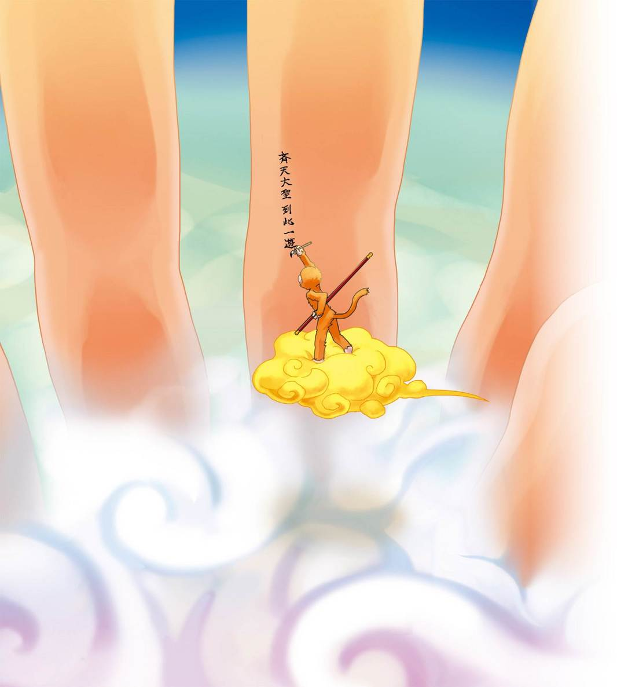
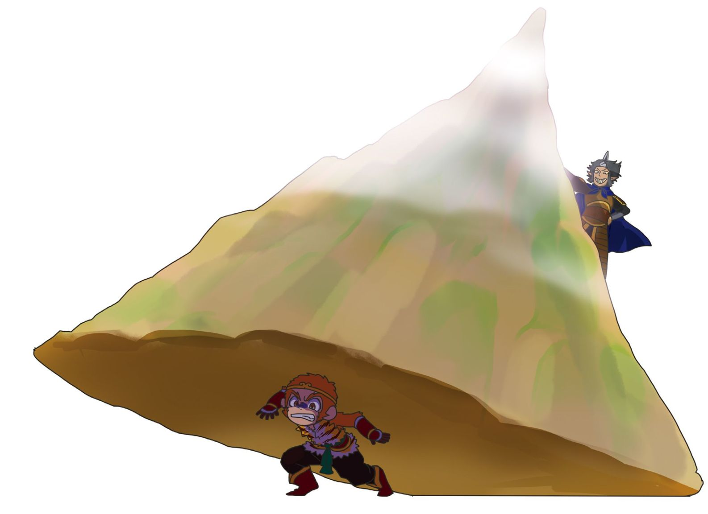
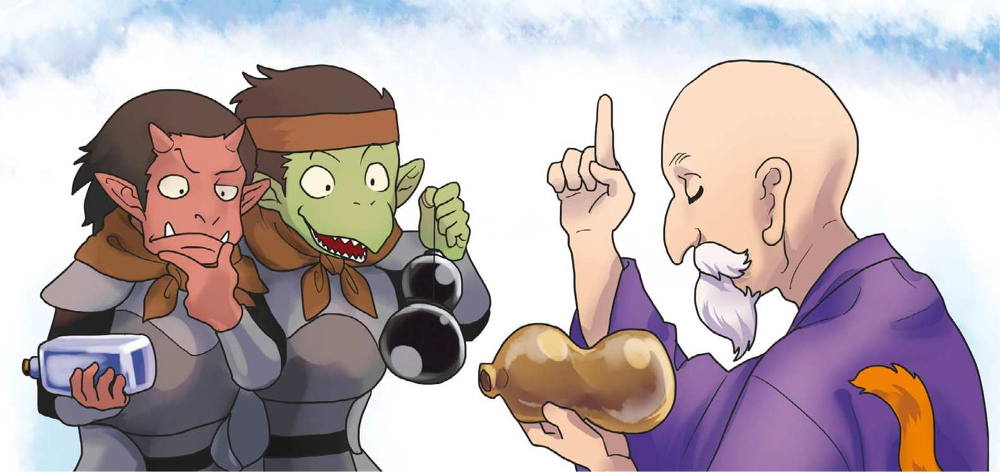
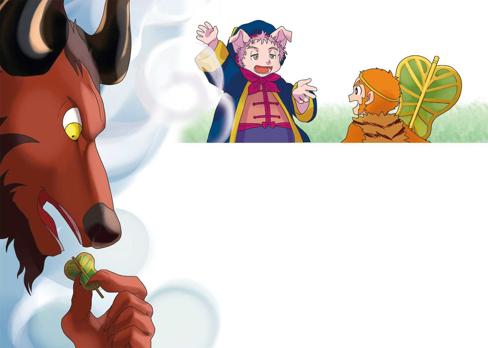

| １０歳までに読みたい世界名作10 西遊記 | |
| Unknown | |
| (2015) | |
１石ザル生まれて、王になる 
昔々のその昔、天地が開けて、だいぶたってからのことです。
世界の真ん中には須弥山という山があり、そのまわりには、東・西・南・北の四つの大陸がありました。東の海の真ん中には、大きな山が、ぽっかりと、うかんでいました。
これは、天地が分かれたときにできた「花果山」という山なのです。
さて、この花果山のてっぺんには、山ができたときからずっと、一つの大きな岩がありました。
あるとき、岩は、バアン！
と、ばくはつして、こっぱみじんに、くだけちりました。あとには、小さくて丸い、石のたまごがのこされました。
やがてそのたまごから、「フギャー！」
と、うぶ声を上げて、一ぴきのサルが生まれました。
石から生まれたので、仲間たちは「石ザル」と、よんでいました。
ある日のことです。
サルたちが川をさかのぼっていくと、ゴウゴウと水しぶきをあげる、大きなたきがありました。
「すごいたきだなあ。このたきつぼ（＊）の向こうは、どうなっているんだろう。」
「たしかめてみたいけど、流れがはげしいから、むりだよな。」
「もし、だれか行ってもどってくることができたら、そいつをおれたちの王様にしよう。」
「それは、いい考えだ。」
「さあ、だれか行く者はいないか。」
すると、あの石ザルが、手をあげました。
「よし、おれが行ってくる！」
石ザルは目をつむり、ザブンと水にとびこむと、たきつぼの底へ泳いでいきました。やがてあたりが明るくなったので、水面にうかんでみました。すると、そこは、たきのうらがわで、石でできた、自然の宮殿があったのです。
石ザルは、仲間のところにもどり、みんなといっしょに、その石の宮殿でくらすことにしました。
サルの王様になった石ザルは、お酒を飲んだり、遊んだりして、毎日楽しく、くらしていました。
それから四、五百年がたちました。
ある日、石ザルは、急に悲しくなり、なみだをぽろぽろ、こぼしました。
「王様、どうなさったのです？」
と、まわりのサルは、びっくりしてたずねます。
「ああ、いつかはおれも、じごくのえんま大王によばれて、死んでしまうのだ。そう思ったら、悲しくて、たまらなくなったのさ。」
すると、年とったサルが、いいました。
「王様。えんま大王によばれても死なないのは、神様と仏様と仙人です。だから、王様も修行をして、仙人になればいいんですよ。」
「そうなのか！ よし、じゃあ、おれも仙人になるための修行をするぞ！ どこへ行けば、仙人に会えるのだ？」
「それはやはり、人間の世界へ行くしか、ありません。」
「ようし。さっそく出かけるぞ！」
石ザルは、いかだに乗って、川を下りました。
ところが、何年も何年もさがしても、死なない力を持った仙人には、会えませんでした。でも石ザルは、さがしつづけました。
２悟空の修行
山の中で、一人の老人が、たくさんの弟子を教えていました。この人こそ、菩提祖師といって、世の中のひみつをすべて知っている仙人でした。とうとう、石ザルは、えらい仙人に出会ったのです。
「わたしを弟子にしてください。」
「ううむ。サルか。いったい、おまえはどこからやってきたのだ。」
「わたしは花果山の石から生まれ、サルの王様として、何百年も生きてきました。ようやく、ここにたどりついたのです。」
「そうか。石から生まれたサルなのか。まさに大地の子だな。ならば、ここで修行をしなさい。ついては、おまえに人間の名をさずけよう。これからは、孫悟空と名乗りなさい。」
「おお、やった。ついに、わたしにも人間の名前がついた。ありがとうございます！ しっかり修行します。」
それから孫悟空は、毎日毎日、修行をしました。熱心だったので、仙人はとくべつに、様々な術を教えました。「きんと雲」という雲に乗って、空をとぶ術も学びました。きんと雲に乗ると、十万八千里（＊１）もとぶことができるのです。
ある日のこと。弟子の一人がいいました。
「おい、悟空。おまえ、師匠（＊２）にひみつの術を教わっているそうじゃないか。おれたちにも見せてくれよ。」
「ああ、いいとも。見せてやろう。」
悟空は、いい気になって、他人に見せてはいけないといわれていた術を使い、ぱっと、松の木に変身してみせました。
３王様の武器
悟空がひさしぶりに、花果山にもどってみると、家来のサルたちが、ないているではありませんか。
「おーい、どうしたんだ。」
「おかえりなさい、王様。」
「ふん、おれさまは、今では孫悟空というんだぞ。それより、何をないているんだ。」
「じつは、混世魔王という魔物が、仲間をさらっていくのです。」
「なんだと！ おれがやっつけてやる。」
悟空は、魔王のほらあなに行き、勝負をいどみます。体の毛を一つまみぬいて、ふうっと息をかけると、毛の一本一本が何百人もの悟空に変身してたたかったので、魔王は、あっというまにたおされてしまいました。魔王にとらわれていたサルも、ぶじにかいほうされました。
悟空のうわさを聞いて、けものの精や妖怪や魔物が、悟空の家来にしてもらおうと、ぞろぞろ花果山にやってきます。
「たくさんの家来もできたぞ。王様としてのおれにふさわしい、りっぱな武器がほしいなあ。」
「それなら、きっと海の底の竜宮にございますよ。」
と、年よりのサルがいいます。
「竜宮か。よし、行ってみよう！」
悟空は花果山のたきつぼからもぐり、どんどん泳いで、海底の竜王の宮殿にやってきました。
「竜王、おれに武器をよこせ。」
「は、はい！」
竜王はおそれをなして、いくつもの武器を悟空に見せます。けれど、
「軽い、軽い。もっと重い、すごい武器はないのか。」
「では、これはいかがでしょうか。」
竜王がさしだしたのは、「如意棒」という、両がわに金の輪が、はめてある、鉄の棒でした。
４斉天大聖と名乗る
さあ、いかりがおさまらないのは竜王たちです。さっそく、天にのぼり、神々の中でいちばんえらい、天帝にうったえました。
「あのばけザルを、なんとかしてください！」
すると、もめごとを丸くおさめるのが得意な、金星がいいました。
「ばけザルを天によんで、何か仕事をさせましょう。」
「なるほど、それはいい。」
と、天帝もうなずきました。
そこで、金星は悟空のところへ行き、
「よろこべ。天帝が、おまえにお役目をくださったぞ。今すぐ天にのぼってきなさい。」
「おお、そうか。それなら行ってやろう。」
悟空もうれしくなって、天帝にあいさつにいきました。
「おまえには、天馬千頭をやしなう仕事をしてもらおう。」
と、天帝はいいました。
「よろこんで、つとめさせていただきます。」
悟空はまじめに、馬を飼う仕事をしていました。でも、あるとき、仲間にたずねました。
「この仕事は、天の位では、どれくらいりっぱなんだね？」
すると、みんなわらいました。
「なに、おれたちは位も何もない、ただの馬飼いだよ。」
これを聞いて、悟空はかんかんです。
「だましたな！ おれをだれだと思っている。花果山の王様、孫悟空様だぞ。」
天の宮殿のそこらじゅうを、如意棒でひっくりかえし、柱をなぎたおしてあらしまわり、花果山にもどりました。
そして「斉天大聖（＊１）」と、勝手に名乗りました。
それを知った神様たちはかんかんです。悟空をやっつけようと、たくさんの兵が、花果山におしよせます。
ところが、悟空には、だれも歯が立ちません。
「しかたがありません。わたしが話をつけましょう。」
と、金星がいいました。金星は、悟空にいいました。
「悟空、よろこべ。天帝は、おまえが勝手に名乗っている『斉天大聖』という位を、そのまま、みとめてくださるそうだ。」
「そうか。わかればいいんだ。」
「そこで、また、天の仕事をしてもらおう。」
「今度はどんな仕事だ？」
「天の桃畑のかんりだよ。」
悟空が、金星につれられて桃畑に行くと、おいしそうな桃がたわわに（＊２）実っています。
「ここには、桃が三千六百本ある。三千年、六千年、そして九千年に一度しかじゅくさない桃だ。三千年の桃を食べれば仙人に、六千年の桃を食べれば不老長寿（＊３）、九千年の桃を食べれば、天地と同じだけ長生きできる。しっかり番をしておくれ。」
「ふうん。すごい桃だ。うまそうだなあ。」
悟空は、だれもいなくなると、服をぬいではだかになり、サルのすがたにもどって、するすると桃の木に登りました。そして、じゅくした実をもぎとると、
ぱくりっ。
「うまいっ！」
数日後には、九千年に一度しかじゅくさない、きちょうな実を、ほとんど食べつくしてしまったのでした。
「あっ。まずいことをしちまった。役人に見つかる前に、にげだそう。待てよ。どうせにげるなら、ほかのごちそうも食べてやれ！」
悟空は天宮の台所にしのびこみました。お酒をぐびぐび飲み、ごちそうをたいらげると、今度は別の宮殿にしのびこみ、五つのひょうたんに入っていた「金丹」という丸薬を、全部食べてしまいました。まったく、食いしんぼうにもほどがあるというものです。
５二郎真君とのたたかい
もうだれも悟空をゆるしてはくれません。天界から十万の兵が、花果山にせめよせました。
天帝のおい（＊１）、二郎真君も悟空にいどみます。真君の刀と、悟空の如意棒が、三百回以上も打ちあいましたが、勝負はつきません。
真君はぶるっと体をふるわせ、山ほどの大きさに変身します。
悟空も負けじと、同じ大きさにすがたをかえ、一歩も引かずに、たたかいます。
将軍たちも真君に味方するので、悟空は、おされていきました。
そこで悟空は、ぱっとスズメにばけました。二郎真君があたりを見まわすと、スズメが木のえだにとまっています。
「あれだな、悟空は。」
と、真君は、タカにすがたをかえ、スズメを追いかけます。
「これはたまらん。」
と、悟空は海鳥（＊２）にすがたをかえて、とびさろうとしました。すると、真君はツルにばけ、海鳥を追いかけます。海鳥は、まっさかさまに谷川につっこみ、魚にばけて、川の中にひそみました。
「どこだ。」
真君が川の中を見ると、つつっと、にげる魚がいます。
「あれだ。」
と、くちばしでつきさそうとすると、魚はヘビにばけ、するするっと草むらにのがれます。ふたたび、真君はツルになって、草むらのヘビを追いかけます。すると、悟空はガンになって、空高くとんでにげました。
はげしい変身合戦も勝負がつかず、おたがいにまた元のすがたにもどって、たたかっている最中のこと。天から、太上老君という神様が投げおろした金のうで輪が、悟空の頭に命中しました。
ゴツン！
不意をうたれて（＊３）、悟空は、ばったりたおれ、真君に取りおさえられ、ついにつかまってしまいました。
天帝は、いいました。
「こんなサルは、八つざきのけいだ！」
悟空は、刀やおので切りつけられましたが、体がかたいので、刃がおれてしまいました。
「ならば、薬をつくる炉（＊４）に入れて、やいてしまおう。」
と、太上老君がいいました。
そこで、悟空は炉にとじこめられ、鉄をとかすよりも熱い火で、七千七百四十日の間、ごとごと、ぐつぐつと、にられてしまいました。
「もうそろそろ、よかろう。」
と、太上老君が炉のふたを開けたときでした。悟空が、炉からとびだしたのです。
「まったくもう、くそ熱いところに、とじこめやがって！」
悟空ときたら、前よりもきたえられた、強い体になって、炉の中から出てきたのです。目はけむりのせいで、真っ赤になりました。
このとき、炉の火が大地に落ちて、火炎山という、いつも火がもえさかっている山になりました。
６お釈様のてのひら
「もう、わたしたちの手には負えない。このさい、お釈様におねがいするしかない。」
と、天帝はなげきながら、お釈様のいる西天に、使いを出しました。
「なに、ばけザルが、天界であばれまわっているとな？」
お釈様は、さっそくやってきて、悟空とたたかっている将軍たちに、いったん、ひくようにいいました。
「だれだ。おれのたたかいをじゃまするのは。」
と、悟空はどなります。
「わたしは釈だ。そなたは、なぜそんなにあばれているのだね？」

「おう、おれは、ありとあらゆる術を使いこなす、斉天大聖、孫悟空様だ。天帝にかわって、おれが天界を支配してやるんだ。」
「ほう、ただのばけザルのくせに、たいそうな口をきくものだ。いったいおまえに、どんな力があるというのだね。」
「ふん、おれさまは、あらゆるものにばけることができる。きんと雲に乗れば、十万八千里をひとっとびだぞ！ おそれいったか！」
「あっはっは。おまえはわたしの、このてのひらの中でさえ、とびだすことはできないよ。」
「な、なんだとお。そんなことがあるものか！」
「では、やってみるがよい。」
お釈様は、てのひらをさしだしました。悟空は、そこにぴょんと乗ると、「行くぞ、そうれ！」と、きんと雲とともに、
びゅーーーん！
目にもとまらぬ速さで、とんでいきました。
「おお、もう世界のはてまで来たじゃないか。」
目の前に、巨大な、はだ色の柱が五本、雲の上から、にゅうっとつきでています。
「よし、ここまで来たという、しょうこをのこしておこう。」
悟空は、毛を一本ぬくと、ふうっと息をふきかけて筆にし、五本の柱の真ん中に、「斉天大聖、ここに来て遊ぶ」と書きつけました。

「これでよし。」
びゅうん！
「今帰ったぞ。さあ、これからは、おれさまが天帝だ！」
「おかしなことをいうものだ。」
と、お釈様はいいました。
「おまえはわたしのてのひらから、一歩だって出ていないよ。」
「なんだと！ あのなあ、世界のはてには、五本の柱が立っていて、おれはそこに、しょうこの文字を書いてきたんだぞ！ これからいっしょに行って、見せてやる！」
「それにはおよばぬ。目の前を見るがよい。」
「なんだと？」
悟空が見ると、目の前には、さっき世界のはてで見たのと同じ、五本の柱がそびえているではありませんか。真ん中の柱には「斉天大聖、ここに来て遊ぶ」の文字までくっきり。
五本の柱は、お釈様の、五本の指だったのです。
「げげげっ！」
「おまえの力とは、そのていどのものなのだ。」
ぴしゃん！
お釈様は、悟空をてのひらでたたきつぶし、五本の指を山にかえて、悟空をその下じきにしました。そして、決して出られないように、じゅもんを書いたおふだを、ぺたん、と山のてっぺんに、はりつけました。
「まいった！ お釈様、なんでもいうことを聞くから、ここを出してくれ。」
すると、お釈様はいいました。
「悟空。おまえが心を入れかえるには、たくさんのしれんを乗りこえなければならない。そのきかいがくるまで、待っていなさい。」
７三蔵法師
それから、長い長い年月がたちました。地上の世界は、唐（＊１）という国の時代です。
あるとき、唐の太宗皇帝は、大がかりな、お経を読む会をひらきました。たくさんの僧が、唐の都、長安（＊２）にやってきましたが、その場を取りしきったのは、玄奘という、すぐれたお坊さんでした。その玄奘が、お経をあげているとき、聞いている人々の中から、とつぜん、みすぼらしい身なりの僧があらわれ、声をかけたのです。
「こんなお経では、たくさんの人をすくうことはできない。」
玄奘は、はっとして、いいました。
「おっしゃるとおりかもしれません。どうすれば、よいのでしょうか？」
「西天には、たくさんの人をすくうお経があります。三つの蔵にしまってあるお経を、取りにきなさい。」

そういうと、僧はたちまち、空のかなたにまいあがり、消えてしまいました。それを見ていた太宗皇帝は、いいました。
「あれは観音様だったのか。だれか、西天まで行って、そのありがたいお経を、持ちかえってくる者はいないか。」
すると、手をあげたのは、玄奘でした。
「わたしがまいります。」
「そうか、行ってくれるか。ではたのんだぞ。そなた、三つの蔵にちなんで、これからは三蔵法師と名乗りなさい。」
「ははっ！」
こうして三蔵法師は、ありがたいお経を取ってくるために、西天へと旅立ちました。
けれど、最初から、三蔵法師の旅は、たいへんつらいものでした。おともを二人つれていたのですが、ある村で、トラにおそわれ、おともがにげてしまったのです。のこされた三蔵法師は、村人に助けられ、命びろいしました。
「ああ、こんなことでは先が思いやられる。わたし一人では、とても西天までたどりつけそうにない。」
ため息をついていると、
「お助けください！ お助けください！」
という声が、聞こえます。
「あの声は？」
助けてくれた村人が、いいました。
「いいつたえでは、およそ五百年ほど前に、天から大きな山がふってきて、できたのがこの五行山なのだそうです。そのときに、一ぴきのばけザルが、山の下じきにされたんです。なんでも、天の軍ぜいといくさをして、負けて、こらしめられたそうですよ。今のは、そのサルの声ですよ。土地の神が見はっていて、はらがへったといえば鉄の玉、のどがかわいたといえば銅のしるを飲ませているそうです。いやはや、おそろしいサルがいたものです。」
「そんなことがあったのですか。」
すると、声が、ふたたびいいました。
「そこにおられるのは、西天にお経を取りにいかれる、えらいお坊さんではありませんか。わたしを、ここから出してください！」
「なんと！ わたしのことを知っているとは。」
三蔵法師は、声のするところへ行きました。すると、山のふもとに石の箱があり、その中からサルが顔をのぞかせているのです。
「サルよ、おまえは、何者だ。」
すると悟空はこれまでのことを正直に話しました。そしていいました。
「じつは、先日、観音様がやってきて、おっしゃったのです。西天へお経を取りにいくお坊さんがいる。おまえは、そのお坊さんのおともをしなさい、と。おねがいです、ここから出してください。そうしたら、かならずあなたを守って、西天までおつれしますから。」
「ふうむ。だが、こんな石の箱から、どうやって、おまえを出してやればいいのだろう。」
「山の頂上に、おふだがあります。それをはがしていただければ、よいのです。」
「よろしい。待っていなさい。」
三蔵法師は、五行山の頂上に登りました。そこには、金色にまぶしく光る文字が書かれた、一まいのおふだがありました。
「西天へお経をもとめにいく、三蔵と申します。あのサルが、わたしの弟子にふさわしければ、どうぞ、このおふだをはがしてください。」
三蔵がそういうと、さあっと風がふいて、おふだがふわりと、空中にまいあがりました。山を下りて、おふだがはがれたことをつたえると、悟空はいいました。
「師匠、ここから、はなれてください。」
三蔵が山のふもとをはなれると、とつぜん、
ドガガガガガーーン！
それはそれは大きな音がして、五行山がくずれおちたのです。
もうもうと立ちこめる土けむりがおさまったとき、三蔵法師の前に、一ぴきのはだかのサルが、ひざまずいて、頭を下げていました。
「お師匠様、ありがとうございます！ これからはわたしが、あなたをお守りいたします。」
三蔵法師は、にっこりしました。なんと、たのもしい弟子ができたことでしょう。
８らんぼうな弟子
それからというもの、悟空は馬のたづな（＊１）を引き、食事の世話をして、一生けん命、三蔵法師のおともをしました。以前の、短気でらんぼうな「ばけザル」とは、人がかわったようです。
けれど、ときどき三蔵法師は、悟空のあらっぽさにひやひやしました。トラがおそいかかってきたとき、如意棒で一打ちにころしてしまい、皮をはいで、自分の服にしたのです。

「悟空や、生き物をころすことは、よくないことだよ。」
「あのあばれトラは、これまで何度も旅人をおそって食べていたんですよ。ころしたほうがいいんです。それに、わたしも師匠の弟子ですから、はだかでは、いられません。」
なるほど、それもそうでした。
あるとき、二人の前に、とつぜん六人の山ぞくがあらわれました。
「おい、馬と服と金をおいていけ。そしたら、命だけは助けてやろう。」
「あっはっは。おまえたちこそ、これまでうばった宝物を、全部出せ。」
と、悟空。
「なんだと！」
「やっつけちまえ！」
と、六人がおそいかかると、悟空はあっというまに、みんなをたたきのめしてしまいました。
このようすを見ていた三蔵法師は、いいました。
「悟空！ おまえは、なんというひどいことをするのだ。そんなやつは、わたしの弟子ではない。」
「こいつらは、これまでに何十人、何百人の旅人をころしてきた悪者ですよ。」
「いいや、おまえはまちがっている。」
すると、悟空は、ぷいっとそっぽを向いて、
「ふん、だ。ばかばかしい。もう、あんたにつきあうのはやめた！」
そういって、きんと雲をよび、あっというまに、その場を去ってしまいました。
「ああ......、弟子がいなくなってしまった。」
三蔵法師は、とぼとぼと馬を引き、山道を歩きはじめました。すると、向こうから一人のおばあさんがやってきました。
「お坊さん、どこへ行かれるのですか。」
「西天にお経を取りにいくところなのですが、弟子がいなくなってしまったのです。」
「一人では、とても、西天になど行けませんね。今度、弟子がもどったら、これをその弟子の頭にかぶせなさい。」
そういうと、おばあさんは、金の輪をわたし、そして、あるじゅもんを教えると、ぱっと、いなくなってしまいました。
「ああ、あれは、観音様だったのだ。」
するとやがて、悟空がもどってきました。
「師匠、さっきは悪かったよ。竜王にさんざんお説教されちまった。これからは、またがんばって、あんたを守るよ。」
「そうか。なら、いいものをやろう。このかんむりを、頭につけなさい。」
「おお、きれいな輪っかじゃないですか。」
悟空が金の輪を頭につけると、三蔵法師は、じゅもんをとなえました。すると、金の輪が悟空の頭を、きりきりとしめつけました。
「いてててて！ な、何をするんです。」
「これからは、わたしのいうことをちゃんと聞くか。二度とむだな殺生（＊２）をしないと、ちかいなさい。」
「うるさいっ！ あんたなんか、こうしてやる。」
悟空は如意棒で三蔵法師になぐりかかります。すると、三蔵法師は、ふたたびじゅもんをとなえました。
「うわわわ！ いたたたたた！」
金の輪を外そうとしても、外れません。悟空は、地面にひっくりかえり、頭をかかえて、のたうちまわりました。
「やめて、やめて、やめて！ いうことを聞きます。お師匠さん、わたしがまちがってました。」
「ほんとうに、そう思うのかね。」
悟空は、はっと気づきました。
「この金の輪は、観音様がお師匠さんにくださったものなんですね。これからは、お師匠さんのいうとおりにいたします。」
「やっとわかったようだね。」
と、三蔵はしずかに、ほほえみました。
９三蔵法師の乗りもの
谷川のほとりで、二人が休んでいたときです。いきなり、川の水が音をたてて、波立ったかと思うと、
ザバァーーン！
一頭の竜があらわれ、三蔵法師を目がけておそいかかりました。
「あぶないっ！」
悟空は三蔵をかかえると、ひらりととんで、小高いところに、ひなんさせました。
そのすきをついて、竜は三蔵の馬をぱくりとのみこむと、ふたたび、川の底へもぐってしまいました。
「ああ、どうしよう。馬がなければ、とうてい、西天までたどりつけない。」
と、三蔵がなげきます。悟空は、如意棒を長くのばして、川の底をつつきまくります。すると、竜がすがたをあらわしました。
「こら！ 馬どろぼう。馬を返せ。」
「返せないね。馬はおれのはらの中だ。」
「なんだと！」
悟空は如意棒をふりかざして、竜に打ちかかります。竜はきばをむき、つめを立てて、立ちむかいます。すさまじいたたかいが、えんえんとつづきましたが、竜はやがてつかれきり、川の底に、にげてしまいました。
「いったい、あの竜は何者だ。」
と、悟空が土地の神にたずねると、
「あれは、観音様が、この谷川に、放された竜ですよ。」
という返事です。
「観音様が！ なんてこった。」
と、悟空は急いで天界にのぼり、観音様に会いにいきました。
「観音様、あんまりです。あの竜は、あなたが放したというじゃありませんか。」
「そのとおりです。」
と、観音様はいいました。
「西天までは遠い。ふつうの馬ではむりだから、竜をおまえたちの馬にしようと思って、あそこに、放しておいたのです。ちゃんと、西天にお経を取りにいくと、いいましたか。」
「そんな！ いきなりおそってきたんですから。」
「そう。では、わたしがいってきかせましょう。」
そういうと、観音様は竜をよびよせ、おそったのが三蔵法師一行だと教えました。
「そんなこととは知りませんでした。それでは、おともします。」
そういうと、竜は真っ白な馬にかわりました。悟空は、その馬を三蔵のところへつれていきました。
「おお、なんとすばらしい白馬だろう。」
と、三蔵も大よろこびでした。
10猪八戒と沙悟浄
とある村に着いたとき、村の長者の家では、こまったことが起こっていました。
長者のむすめに、むこ入りした男が、最初はふつうの人間だったのに、しばらくするとようすがかわり、まるで豚のような顔になり、食べ物を食いつくし、おそろしい風や、すなあらしをまきおこすので、みんなおびえているというのです。
そこで悟空が、長者のむすめに変身して待っていると、豚のような大きな怪物が、つむじ風とともに、家の中に入ってきました。
「おおい、かわいいおいらのおよめさん。今、帰ったぞ。」
そういって、むすめにだきつこうとしたので、悟空は妖怪をつきとばしました。
「いてっ！ 何をするんだ。何をおこっているんだよう。」
「うちのお父さんが、強い法師をよんで、あんたを追いだしてしまおうといってるの。」
「なんだと。おいらにかなうやつがいるものか。いったい、どんな法師をよぶというんだ。」
「なんでも、天界で、斉天大聖と名乗っていた人らしいわ。」
「げえっ！ 知ってるよ、そいつのことは。そりゃ、まずい。」
「そんなに強いの？」
「強いなんてもんじゃないよ。天の軍ぜいを相手に、一歩も引かずに、たたかったやつなんだぜ。」
「そいつは、こんな顔？」
そういうと、むすめの顔が、ぱっと悟空の顔にかわりました。
「げげげっ！ なんてこった。」
「さあ、豚の大食らい、もういいかげん、この家にまとわりつくのは、やめろ。」
「うるさい！ おいらが強いのを知らないな。」
豚の妖怪は、山のどうくつへとんでいき、武器を手にして、もどってきました。二人は空中で、相手をののしりながら、たたかいます。
「なんだ、おまえのその、へなちょこ武器は。」
「これは九歯のまぐわ（＊１）というんだ。おいらは、元はといえば、天界で天の川をおさめ、水軍の指揮をしていた神なのだぞ。」
「その神が、なんで豚の妖怪になったんだ。」
「うるさい。天界で、ちょっと悪さをして、地上に落とされたのさ。そのとき、たまたま豚のはらの中に入ってしまったんだ。」
「あっはっは！ それで、おれさまのことを知っていたのか。」
「そういうおまえは、たしかお釈様にたたきのめされて、五行山にとじこめられているはずじゃないか。なんでこんなところにいるんだ。」
「おれさまは、今は三蔵法師という、えらいお坊さんの弟子なのだ。西天へお経を取りにいく旅のとちゅうなのさ。」
悟空がそういったときでした。豚の妖怪は、いきなり、まぐわをほうりだし、その場に土下座したのです。
「おねがいだ！ おいらを、その三蔵法師に会わせてくれ！」
これには、悟空もびっくりです。
三蔵の前に出ると、豚の妖怪はいいました。
「どうか、おいらをおともにくわえてください。じつは、観音様から、あなたを待って、西天についていけといわれて、ずっと待っていたのです。」
「そうだったのか。では、わたしたちといっしょに、おいで。」
と、三蔵法師はいいました。
「名前もつけてあげよう。これからは、猪八戒と名乗りなさい。」
「はい。これからは、大食らいもつつしみます。」
こうして、猪八戒は悟空を兄弟子として、三蔵の旅にくわわることになりました。
......でも、猪八戒の大食らいは、なかなかなおりませんでしたが。
やがて一行は、流沙河という、はばが四百キロもある大きな川にやってきました。
「はて、どうやってわたったらよいだろう」と考えていると、水の中から、おそろしい怪物が、すがたをあらわしました。
顔は青黒く、かみはぼうぼう、九つのどくろを、じゅずつなぎにして、首にかけています。
「猪八戒、たのんだぞ！ おれは師匠を守る。」
「おう！」
と、猪八戒は九歯のまぐわをふりかざして、怪物を打ちました。
すると怪物は、宝杖（＊２）という武器で、はっしと受けとめました。
「何者だ、なかなか、りっぱな杖を持ってるじゃないか。」
「これは、天帝からいただいたものだ。おまえみたいな、豚のできそこないに負けるものか。」
「なに？ おまえ、天界にいたのか。おいらたちは、西天へお経を取りにいくところなのだぞ。」
「ええっ。それはまことですか。」
怪物は、三蔵の前でいいました。
「わたくしめは、元は天界で大将をしておりましたが、つみをおかして、地上に落とされたのでございます。どうか、わたくしも、おともさせてください。」
「ありがたいことだ。なんと申すのか。」
「沙悟浄と、およびください。」
「この川をわたるにはどうすればよい？」
沙悟浄は、首にかけていたどくろを外し、川にうかべます。すると、どくろは小さなふねになりました。
11妖怪ストリート
こうして、三蔵法師は、竜が変身した白馬にまたがり、孫悟空、猪八戒、沙悟浄の三人の弟子とともに、西天を目指して進みます。
三蔵法師の一行は、様々な国を通り、きけんな目にあいながら、西天に一歩一歩近づいていました。
ゆく手にはたくさんの妖怪が待ちうけていて、そのつど、悟空たちは全力でたたかわねばなりませんでした。しかし、やっつけてもやっつけても、妖怪はおそってきます。
じつは、妖怪の間にうわさが広まっていたのです。それは、「三蔵法師の肉を一切れ食べれば、不老不死（＊１）の体になるらしい」といううわさでした。それで、妖怪たちはあの手この手で、おそいかかってきたのです。
あるとき、山道の向こうから、食べ物の入ったかごを持ったむすめがやってきて、三蔵法師にすすめました。悟空は、一目見て、それが妖怪だと見ぬき、如意棒で一打ちしました。
これを見た三蔵法師は、かんかんに、おこりました。
「おまえはなんということをするのだ。かよわいむすめを、妖怪だ、などといって打ちころすとは。ゆるさない！」
そういって、三蔵は悟空の頭にはめた金の輪をしめつけるじゅもんをとなえます。
「いたたたたた！ 師匠、見てください。やつは、ほんとに妖怪なんです。」
むすめの持っていたかごの中を見ると、そこには、うじ虫やかえるやなめくじが、うじゃうじゃ。悟空のいったことがほんとうだと、三蔵が思ったとき、猪八戒がいいました。
「師匠、きっと兄きは、自分のまちがいをみとめたくなくて、術を使って、食べ物をこんなものにかえてしまったんですよ。」
「いや、兄きにかぎってそれはないでしょう。」
と、沙悟浄。
三蔵は少し考えて、いいました。
「今度だけは、ゆるしてやろう。」
しばらくすると、おばあさんがやってきました。
「みなのしゅう、家を出ていったきり帰らない、わたしのむすめを知りませんかな。」
悟空は今度も、このおばあさんが妖怪だと見ぬきました。
「こんなおばあさんに、あんなわかいむすめがいるものか。えいっ！」
またしても、おばあさんを一打ち。
「ああ、ひどいなあ、兄き。」
「悟空、何をする。もう、これまでだ。おまえのようなやつは、もう弟子ではない。」
「師匠、ごかいです。こいつは妖怪なんですってば。」
そこへ、おじいさんがやってきます。これもまた、妖怪でした。
「きっと、さっきの二人の家の者にちがいないよ。こりゃ、まずいことになったもんだ。」
と、猪八戒。悟空は、そのおじいさんも打ちたおしました。
「うわっ。兄き、半日の間に三人もころしてしまうなんて、ひどすぎるぜ。」
「悟空、もう、ゆるさない。破門（＊２）だ。こんりんざい（＊３）、おまえとは、かかわらないぞ。どこへでも行ってしまえ。」
「そんな。師匠、あそこを見てください。」
三蔵が、悟空の指さすところを見ると、ほねが山になって、つみあげてありました。
「あれはみんな、この妖怪が食べてしまった人間のほねです。」
すると、猪八戒がまたしても、いいかえしました。
「あれだって、悟空の兄きが、術でかえたにちがいないですよ。」
「なんというやつだ。悟空！ おまえと話すのもけがらわしい。二度とわたしのもとへ来るでない。」
悟空はなきながら、三蔵のもとをはなれ、花果山へと帰っていきました。
猪八戒は日ごろから、悟空ばかりが手がらを立てている（＊４）のに、やきもちをやいていました。なので、悟空がいなくなって、せいせいしていました。
ところが、すぐに三蔵は妖怪にさらわれ、追いかけた猪八戒と沙悟浄がどんなにがんばってたたかっても、とてもかないません。猪八戒は、花果山までとんでいきました。
「やっぱり、兄きがいないとだめだよ。」
悟空は、仲間のサルたちと、のんびりくらしていましたが、猪八戒のたのみに、ちょっとうれしそうにいいました。
「そこまでいうなら、助けにいこうか。」
悟空は、あっというまに、妖怪をたたきのめし、三蔵を助けだしました。
「わたしが悪かった。ゆるせ、悟空。」
三蔵は、悟空にあやまりました

12金角と銀角
平頂山という山に、妖怪大王の金角と銀角がすんでいました。二人もうわさを聞いて、どうにかして、三蔵の肉を食べたいと思い、三蔵たちの似顔絵を手下に持たせて、待ちぶせしていました。ちょうどそこへ、悟空にていさつ（＊１）を命じられた猪八戒が、やってきました。
猪八戒は、手下たちが自分の似顔絵を持っているのを見つけて、あわてました。
「ぎょっ。あれは、おいらの顔じゃねえか。」
猪八戒は、あわてて口を内がわにねじこみました。
「おい、おまえ、こんなやつらを見なかったか。この口がとんがっているのが、猪八戒という、豚のばけものだ。」
「うううう、ひりまへん、おひら、なんにも。ふがふがふが。」
「ん？ あやしいやつだな。口を引っぱってみろ。」
と、手下が引っぱると、猪八戒の口はびょろろーんと、とびだしてしまいました。
「おお、こいつが猪八戒だ！」
「つかまえろ！」
猪八戒が立ちむかうひまもなく、あっというまに、がんじがらめにしばられて、妖怪のどうくつにつれていかれ、天井からぶらさげられてしまいました。
「こいつは、あとで塩づけにして食べよう。それより、三蔵を見つけなきゃな。」
そこで、銀角が出かけると、向こうから悟空たちがやってきます。
「こりゃあ、強そうだ。かんたんにはいかないぞ。」
そこで銀角は、旅の者にばけ、一行に近づきました。
足をくじいたふりをしています。
「だいじょうぶですか。」
と、三蔵。
「悟空、おぶってあげなさい。」
「はい、師匠。」
悟空は、旅人が妖怪だとわかっていましたが、打ちころすと、また、三蔵にしかられると思い、だまって、銀角をせなかにおんぶしました。
「ふっふっふっ。ひっかかったな！」
銀角はじゅもんをとなえ、世界の真ん中にある須弥山を、悟空のせなかにどーんと、のせました。山を動かす、まほうのじゅもんでした。

「ううっ！ お、重い！」
悟空はよろよろ歩きながら、山の重さに、ひっしでたえました。
「くらえ！」
銀角はふたたびじゅもんをとなえ、峨眉山（＊２）と泰山（＊３）という、中国で有名な二つの山を、一気に悟空のかたに、どーん、どーんと、のせました。
ぐしゃっ！
さすがの悟空もたえきれず、山の下じきになって、つぶされてしまいました。
銀角はそのすきに、先を行く三蔵と沙悟浄に追いつき、二人を馬もろとも、わきにかかえ、山のどうくつにつれていったのです。そして、猪八戒と同じように、ぐるぐるまきにしばって、天井からつるしました。
「よくやったぞ、銀角！」
と、金角は大よろこび。
「して、悟空はどうした。」
「あのサルなら、山の下じきになってますよ。」
「ううむ。それはまずい。孫悟空というのは、すごいやつなんだ。下じきにされても、すぐに、はいだすに決まっている。そうだ、これを使って、悟空をとじこめてしまえ。」
そういって、金角は、二人の手下に二つの宝物をわたしました。まほうのひょうたんと、まほうのびんです。
「悟空に会ったら、名前をよぶんだ。やつが返事をしたら、ひょうたんの中にすいこまれてしまうから。」
手下たちが、宝物を持って出かけると、やっとのことで山の下からぬけだすことができた悟空に出会いました。でも、悟空は仙人にばけていたので、手下たちは悟空に気づきません。
「おお、りっぱな宝をお持ちだ。」
と、悟空はいいました。そして、自分の持っているひょうたんを見せました。
「じつは、これは、天まですいこんでしまうという、すばらしい宝物なんだ。どうだ、おまえたちの宝物と交かんしないか。」

二人の手下は、顔を見あわせます。
「すごいな。そんなすごい宝物があるのか。」
「交かんすれば、金角大王にほめられるぞ。」
「待て。ほんとにそれほどの宝か、しょうこがあるのか。」
「もちろんだとも。」
と、悟空はいって、
「天よ、このひょうたんに入ってしまえ。」
と、さけびました。するとあっというまに、世界は真っ暗になってしまったのです。
「うわっ！ 元どおりにしてくれ。」
「何も見えないじゃないか。」
「もう、わかったわかった。」
と、手下たちはさけびました。
「元にもどれ。」
と、悟空がさけぶと、世界中が、ぱあっと明るくなりました。
これは、前もって悟空が、天の門をつかさどる神に、大きな黒いはたで、空をおおってくれと、たのんでおいたのでした。
「ぜひ、おれたちの宝と交かんしてくれ。」
と、手下はいい、悟空は、まほうのひょうたんとびんを手に入れました。
悟空は、そのひょうたんを手にして、どうくつに行くと、
「銀角大王！」
と、よびました。
「おう！」
といったかと思うと、銀角はもう、まほうのひょうたんの中に入っていました。
銀角が、ひょうたんにとじこめられたと知った金角は、どうくつを出て、仲間の妖怪をみんな集めて、せめてきました。
悟空に助けられた猪八戒も、沙悟浄も、ここぞとばかりにたたかいます。悟空は、たたかいの最中に、空中で、まほうのびんをかざして、
「金角大王！」
と、よびました。すると、金角は、手下がよんだと思って、
「おう！」
と、返事をしたのです。
13善財童子
さらに一行が進んでいくと、山道で、「助けてー」と、さけぶ子どもの声がします。三蔵法師は、いいました。
「おお、なんとあわれな子どもの声だろう。早く行って、助けてあげなさい。」
「師匠、あれは妖怪の声です。まちがいありません。」
と、悟空。三蔵はふまんそうでしたが、それ以上は、いいませんでした。
まもなく、木の上にしばられている子どもが見えました。
「助けてー」と、ないています。
「何をしている、早く助けなさい。」
と、三蔵はしかりました。猪八戒が、木から下ろします。
「ぼうや、どうしたんだ、こんなところで。」
「とうぞくがやってきて、ぼくの家族を、みんなころしてしまったんです。」
「おお、それはたいへんだ。村まで送って、とうぞくをたいじしてあげよう。悟空、おまえはほんとにばか者だ。この子は、こんなに、こまっているではないか。」
と、三蔵はいい、悟空はしかたなく、子どもをせおいました。
すると、子どもにばけた妖怪は、悟空の首に息をふきかけ、動けなくしようとしました。
「ふん、そんなことだと思ったぜ。」
と、悟空は子どもを道に投げつけました。ところが、妖怪はまほうを使い、子どもの体から、ぬけだしていました。
「ばれたか！」
と、妖怪はあたり一面に、あらしをまきおこします。そのあらしのすごさに、みんな、地面に、はいつくばりました。
あらしがやむと、三蔵法師がいません。
「やられた！ もう、最初からおれのいうことを聞いてくれたら、こんなことにはならなかったのに。」
と、悟空はくやしがりました。
地元の山の神をよびだして、妖怪のことをたずねると、山の神はいいました。
「あれは、おそるべき妖怪で、名前を紅孩子といいます。なんでも、母は羅刹女、父は牛魔王というらしいです。」
「なんだと？」
悟空は目をむきました。
「どうしたい、兄き。」
「その妖怪を知っているのか？」
「知っているもなにも。牛魔王は、その昔、おれがあばれザルだったとき、いちばんのなかよしで、兄弟みたいなもんだったんだよ。そうか、牛魔王の息子だったのかあ。」
なんだかなつかしくなった悟空は、さっそく紅孩子のどうくつにとんでいき、
「おい、妖怪、おまえの父の牛魔王とおれは兄弟だ。早く三蔵法師を返しなさい。」
と、さけびました。ところが、紅孩子は、まったく聞きいれません。
「知るか！ 今からこの坊主を、むしやきにして食べるんだよ。」
しかたなく、悟空は紅孩子とたたかいました。なかなか強い相手です。負けそうになると、悟空が苦手な、火とけむりを体からふきだして、にげてしまいました。
「まいったな。あの火とけむりには、おれもげんなりだ。」
すると、沙悟浄がいいました。
「兄き、火とけむりなら、竜王をつれてきて、水をかければどうだろう。」
「おお、そいつはいい考えだ！」
そこで悟空は、竜王をつれて、ふたたびたたかいをいどみます。
しかし、竜王が水をかけても、紅孩子はへこたれるどころか、まるで油でも注いだように、ますますいきおいのある、火とけむりをふきだしてきました。
「わたしが、なんとかしましょう。」
あらわれたのは、観音様でした。観音様はいつも、悟空たちの旅を見守っていてくれたのです。海の中から亀をよびだすと、亀がせなかにのせてきたつぼを持ち、その中に海の水をたっぷり入れました。悟空がそれを持とうとすると、とても重くて持ちあがりません。
「いったい、どれだけ水を入れたのですか。」
「海の水の半分くらいですね。」
と、観音様。
観音様がその水を、紅孩子のどうくつにかけてたたかい、紅孩子がつかれて、はすの花の上で休んだときでした。観音様のじゅもんによって、はすの花が紅孩子の体にからみついたのです。そして、金のうで輪をはめられ、やっと紅孩子は、観音様のいうことを聞くようになりました。
「これからは、善財童子という名にしなさい。そして、わたしに仕えなさい。」
「はい。」
あやうく食べられるところだった三蔵法師は、観音様に助けられたと聞いて、
「ありがたや。」
と、頭をたれました。
「これからは、悟空をうたがうことはしませぬ。」
「さあ、またみんなでがんばって、西天へ行きましょう。」
と、悟空はいいました。
14火炎山
一行の旅はつづきます。もう何度目かの秋もすぎて、冬になろうとしていました。
ある村に入ると、なぜか、みょうに暑いのです。悟空は、村人に、たずねました。
「おかしいなあ。もうすぐ冬なのに、どうしてここは、こんなに暑いんだ。」
すると、村人は答えました。
「この先に火炎山という山があるのです。いつももえていて、その熱いことといったらありません。」
悟空たちは、顔を見あわせました。
「そんな山では、ぶじに通りぬけることは、できそうにないなあ。」
「どうしたらよいのだろう。」
悟空は、村人にたずねました。
「こく物を作るときには水がひつようだろう。どうやって雨をふらせるのだね？」
「はい。そのときは、みつぎ物を、羅刹女という仙女にささげ、芭蕉扇というもので、あおいでもらうんです。すると火がおさまり、雨がふるので、こく物を植えることができます。」
「羅刹女かあ......。」
悟空は先ほど、羅刹女の子の紅孩子をやっつけたばかりです。
「しかたがない。いちかばちか、たのんでみるしかないな。」
悟空は羅刹女のすむ、芭蕉洞という、ほらあなにやってきて、いいました。
「おおい、孫悟空だよ。羅刹女さん、どうか芭蕉扇を、おれにかしておくれ。」
すると、ほらあなから羅刹女が出てきました。顔は、いかりで真っ赤になっています。
「なんだと！ どの面を下げて、わたしに会いにきたのだ。おまえは息子のかたきだ。紅孩子を返せ。ゆるさないぞ！」
「待ってくれ。紅孩子は、今は心を入れかえて、天界で善財童子と名乗っているんだ。」
「うるさい！ こうしてくれる。」
羅刹女は、芭蕉扇をふわりと一あおぎしました。すると悟空は、
ぴゅーーーん！
何万里も、一気にふきとばされてしまったのです。
「うわあ。まいったなあ。」
「悟空、どうしたのですか。」
と、いったのは、観音様でした。悟空がわけを話すと、
「では、これをあげましょう。」
と、一つぶの丸薬をくれました。
「これは、どんな風にも動かない薬です。せなかにぬいこんであげましょう。」
そういうと、観音様は悟空の服のせなかのところに、丸薬をぬいつけてくれました。
「一ついっておきますが、あの火炎山は、おまえが太上老君の炉から、にげだしたときに、落ちた火でできた山なのです。あなたのせいでも、あるのですからね。」
「ええー。そうだったんですか。おれも、あちこちに、めいわくをかけてきたもんだ。」
悟空がどうくつにもどると、羅刹女はまたしても芭蕉扇をあおぎ、悟空をふきとばそうとします。でも今度は、悟空はびくともしません。羅刹女はどうくつににげこんだので、悟空は小さな虫になって、どうくつに、しのびこみました。
羅刹女は、
「ああ、のどがかわいた。」
といって、お茶を飲もうとしました。
悟空はぶーんととんで、茶わんにとまり、羅刹女はそうとも知らずに、ごくん、と悟空を飲みこんでしまいました。
羅刹女のおなかの中で悟空は大あばれ。
「どうだ！ おれに芭蕉扇をわたせ。
わたさないと、こうだぞ。えいっ、えいっ！」
「ひい～！ おなかの皮がやぶれてしまう。わかった、わかったから。芭蕉扇をわたすから、ゆるしておくれ。」
「よし、口を大きく開けな。出てやるから。」
「あーん。」
羅刹女が口を開けると、悟空は外へとびだし、元の大きさになると、芭蕉扇を受けとりました。
さっそく、みんなのところにもどった悟空が、芭蕉扇を一あおぎ、二あおぎすると、どうしたことか、火のいきおいが、ますます強くなるではありませんか。
「くそっ！ まんまと、だまされた！ これは、にせものじゃないか。」
15牛魔王
悟空は、かんかんです。
今度は、夫の牛魔王のところへ行きました。
「おまえ、悟空じゃないか。よく、のこのこと出てこられたものだ。おまえのおかげで、息子の紅孩子はとんでもないことになった。」
「だから、それはごかいなんだ。おまえの息子は、おれの師匠を食べようとしたのだよ。」
と、悟空は羅刹女にいったのと同じことを、説明しました。
「今では天界で、善財童子としてちゃんとくらしているよ。だから、おくさんの羅刹女にいって、芭蕉扇をかしてもらってくれよ。」
牛魔王は、まったくなっとくしません。
「なんだとお！ おまえなんか、もう兄弟でもなんでもないわ。これでもくらえ！」
と、牛魔王は、鉄棒を悟空に打ちおろしました。悟空も、如意棒でおうせんします（＊１）。しかし、決着がつきません。
すきを見て、悟空は、牛魔王の乗りものをこっそりぬすむと、牛魔王にばけて、羅刹女のところへ行きました。
「おーい、おれだおれだ。もどったぞ。」
「お帰りなさい。おまえさんが、るすの間に、孫悟空がやってきて、さんざんな目にあったのよ。」
「そうらしいな。ところで、芭蕉扇はぬすまれなかっただろうな。」
「だいじょうぶですよ。ちゃんと、ここに。」
といって、羅刹女は口を開けて、したを出しました。するとそこに、小さなあんずの葉のようなものがありました。
「芭蕉扇とは、そんな小さなものだったかい。それで、あおぐことができるのか？」
「いやですね、おまえさん。わすれちゃったんですか。大きくするじゅもんを、となえるんですよ。」
といって、羅刹女はじゅもんをいいました。
「なるほど、そうだった、そうだった。」
そういって、牛魔王にばけた悟空は、じゅもんをおぼえました。
そして、芭蕉扇をぱくりと口に入れました。
「ざんねんだったな、おれは、孫悟空だよ。」
そういって、元のすがたにもどり、さっさと出ていきました。
「く、くやしい～！ 悟空、ゆるさないぞ。」
羅刹女は、地団太をふんで（＊２）くやしがりました。やがて、ほんものの牛魔王が帰ってきて、話を聞くと、こちらもおこり、
「くそっ。おれが取りかえしてやる。」
といって、出ていったのです。
さて、悟空がじゅもんをとなえると、芭蕉扇は大きくなりました。
「なるほど。これであおげるというものだ。」
ところが、小さくするじゅもんをきかなかったことに、気づきました。
「しかたがない。このまま持ってかえろう。」
すると、向こうから声がします。見ると、猪八戒でした。
「おーい、悟空の兄き。芭蕉扇を取りもどしたかい？」
「おう！ 心配になって来てくれたのかい、猪八戒。やっと手に入れたよ。」
「おお、それが芭蕉扇か。重いだろう、おいらが代わって持ってやるよ。」
「ありがたい。」
と、悟空が芭蕉扇をわたすと、
「ざんねんだったな。おれだよ。」
と、猪八戒にばけていた牛魔王が、すがたをあらわしました。

もちろん、牛魔王はじゅもんを知っていたので、芭蕉扇を小さくすると、口の中にぱくり。
牛魔王は、ほらあなの羅刹女に芭蕉扇をわたすと、
「さあ、来い！ 勝負だ。」
と、さけびました。
そして、ものすごいたたかいが始まりました。悟空には、猪八戒と沙悟浄が助けに入ります。さらに、土地の神々も、くわわりました。けれど、牛魔王にも、たくさんの妖怪の手下がいたのです。
やがて、牛魔王の手下がやられてしまうと、牛魔王はコウノトリに変身して、にげようとします。悟空はすかさず白ハヤブサになって、追いかけます。すると、牛魔王はわかいタカになってにげ、悟空はカササギになりました。
牛魔王が、さらに白いツルとなって空高くにげようとすると、悟空は鳥の王者である赤い鳳凰になって、一声高くさけびました。ツルの牛魔王は、これ以上にげられないとさとり、地上に下りて、シカにすがたをかえました。
悟空はトラになって、シカにおそいかかります。あわてて、牛魔王はヒョウになって、トラに立ちむかいます。
すると、悟空は金色の目のライオンになりました。次に、牛魔王は巨大なクマになり、悟空はゾウになって、クマをとらえようとします。
「わっはっは！ おぬしもやるな、悟空。」
牛魔王はわらって、ついに白い巨大な牛になりました。これこそが、牛魔王の元のすがたでした。その大きさときたら、頭から尾まで千丈（＊３）、身のたけ八百丈、頭は、けわしいみねのよう、するどいきばは、刀をならべたようでした。
「かかってこい！」
「おう！」
と、悟空も巨大なサルに変身です。その身のたけは一万丈！
二人のたたかいで、山はとどろき、雲はかきみだれ、あたり一面に、岩がふりそそぎました。みんながおどろいて見あげる中、たたかいはえんえんとつづきます。しかし、牛魔王の手下たちは、もう、ほとんどがやられてしまっていました。
そこへ、天界の神々がやってきました。牛魔王がにげようとすると、四方八方を神々がふさぎ、とうとう、とらえられて、首をはねられました。ところが、はねられてもはねられても、牛魔王の首は、にょきにょきと生えてくるのです。
そこで神々は、まほうが使えなくなるかがみで、牛魔王をてらして動けないようにし、やっととらえたのでした。
「芭蕉扇を出せ。」
と、悟空がいうと、羅刹女がほらあなから出てきて、芭蕉扇をさしだしました。
牛魔王と羅刹女は、命は助けられました。
二人は、心を入れかえて、人のために生きることを、ちかったのです。
さて、村にもどって芭蕉扇で打ちあおぐと、あたりはすずしくなり、やがて、火炎山の火が消えました。
「だが、来年になれば、また火炎山は、熱くなるのだろう。あの火の元をたつには、どうしたらよいのだ？」
と、悟空がたずねると、羅刹女はいいました。
「この芭蕉扇で、四十八回、つづけてあおぐと、火が元から消えるんです。みつぎ物をもらうため、あおぎすぎないようにしていたんだけれど。」
「そうか。よし！」
悟空は四十八回、芭蕉扇であおぎました。
すると、雨がふってきました。
16ここは西天
そして、ついにその日がやってきました。
三蔵法師が唐を出てから、十四年目のことでした。
雲のたなびく空の下に、美しい塔や、王宮のようなきらびやかな建物がならんでいるのが見えます。三蔵は、つぶやきました。
「おお、なんと美しい都だろう。」
すると、悟空はいいました。
「師匠、どうしてまだ馬に乗っておられるのです？ ここは、お釈様のすむところなのですから、馬を下りなければいけません。」
「なんと！ それでは、ここが西天なのか！」
悟空たちは、にっこりわらいました。
「おめでとうございます。」
「さあ、まいりましょう。」
「われらも、もう雲に乗ったりはいたしません。ここからは歩いて、お釈様や、み仏たちに会いにいきましょう。」
三蔵はうなずいて、馬から下りました。
まもなく、一行は城門に着きます。
すると、門番をしていたりっぱな仙人が、いいました。
「観音様が、そなたたちは唐を出てから数年でここに来るだろうといっておられたが、けっきょく十年以上もかかってしまったな。」
それから門番は、一行に食事を出し、お湯で体をきよめさせ、お釈様のいる大雷音寺への道を教えてくれました。
ところが、すぐに大きな川に出てしまい、三蔵はとほうにくれました（＊１）。
「こまったな。こんな大きな川をどうやってわたればよいのだろう。」
すると、向こうから一そうのふねがやってきました。悟空は、そのふねの船頭が、仏の一人であることを見ぬきました。
「おお、あのふねに乗せてもらいましょう。」
ところが、三蔵が見ると、そのふねには底がないのです。
「こんなふねに、乗るわけにはいかない。おぼれてしまうではないか。」
「いいんです、お師匠様。さあ！」
悟空は、なかば、むりやりに三蔵の手を引いて、ふねに乗せました。するとやはり、三蔵はふねに乗ったとたん、ずぶずぶとしずんでしまったのです。悟空たちは、あわてず、三蔵を引きあげました。
「おお、ふしぎだ。」
と、三蔵法師はいいました。
今度は、底のないふねに、ちゃんと立っているではありませんか。
「お師匠様。ようやくあなたは人間の体ではなくなったのですよ。」
と、悟空はいいました。
「これからは、雲にも乗ることができるでしょう。」
一行の目の前の川を、一人の人間が、ぷかぷかとうかんで流れていきました。それが、三蔵法師の元の体だったのです。
お釈様は、大雷音寺で、一行に会いました。まわりには観音様をはじめ、たくさんの菩薩や仏たちがならびます。
お釈様は、いいました。
「ごくろうであった。ここには一万五千巻の経典がある。そこからえらんで、唐に持ちかえるがよい。」
そういって、弟子のアナンとカショウの二人に、お経をわたすように命じました。
そこで一行が、宝物のごてんに入ると、アナンとカショウはいいました。
「はるばる唐から来たのだから、さぞ、りっぱなみやげがあることだろう。さあ、それをお出しなさい。」
「みやげ、ですか？」
三蔵はきょとんとしました。そんなものをようきゅうされるとは、思わなかったのです。もちろん、悟空たちも、ここでお釈様の弟子から、そんなことをいわれるとは思ってもみなかったので、いいあらそいになりました。
けれど、けっきょく、アナンとカショウは、お経をわたしてくれました。
「いったいなんで、あんなよくばりの弟子がいるんだろう。」
といいながら、一行が帰ろうとすると、とつぜん、つむじ風がふいて、経典を空にまきあげました。みんな、経典をばらばらにしてはならないと、ひっしでつかまえます。
悟空が、一巻の経典をふと開いてみると、なんとそこには、ただの一字も、文字が書いてありません。
「おい、これはどうしたことだ。この経典は白紙じゃないか。」
「ええっ！」
みんな、あわてて、ほかの経典を調べます。すると、それらはすべて、白紙の経典だったのです。
「ああ、なんということだ。」
と、三蔵法師は、なげきました。
しかし、これもまた、しれんの一つだったのです。お釈様にうったえると、もう一度、チャンスがあたえられました。
ふたたび、宝物のごてんで、アナンとカショウが、いいました。
「ところで、ほんとうにみやげはないのですか。」
三蔵は、はたと気づきました。そして、いいました。
「唐を出るときに、太宗皇帝からいただいた、たくはつの鉢（＊２）がございます。それでよろしければ。」
といって、沙悟浄にたくはつの鉢を持ってこさせました。
「おお、すばらしい！ よくぞ、その大切な鉢に気づかれた。さあ、どうぞ経典を持っていくがよい。」
と、アナンとカショウはいいました。
今度は、しっかりと一巻ずつ、中身をたしかめながら、一行は五千巻の経典をもらいうけました。
お釈様は、いいました。
「それでは、八大金剛（＊３）よ、この者たちを唐へつれていくがよい。経典をおさめたのち、ふたたび、みなをここへつれてきなさい。いいわたすことがあります。」
八大金剛は、一行を雲に乗せ、唐の都、長安へと向かいました。
17悟空、仏となる
太宗皇帝が長安の宮殿にいると、空に美しいかすみがたなびき、三蔵法師が下りたちました。
「おお、三蔵法師！ よくぞ、ぶじにもどってこられた。」
「皇帝陛下、西天から、経典五千巻を持ちかえりました。」
「よくやってくれた。」
盛大な、かんげいのうたげが開かれました。
よく日、三蔵法師は皇帝にたのまれるまま、お経を読むことになりました。
けれど、まさに読もうというときに、天から声がしました。
「三蔵法師、お釈様が、西天にもどるように、とのことだ！」
三蔵、孫悟空、猪八戒、沙悟浄、そして白馬は、そろって空へとまいあがります。
その神々しいようすを、皇帝と長安の人々はみな、ひれふしておがみました。
ふたたび西天にもどった三蔵たちに、お釈様はいいわたしました。
「三蔵、そなたは人間の身でありながら、よくこのつらい旅を乗りこえてくれた。これからは仏となって、人々のために、つくしなさい。」
「ははっ！」
「孫悟空。三蔵を助けて、よくここまでがんばった。おまえも、仏にしてあげよう。」
「ありがとうございます！」
「猪八戒、おまえは仏ではなく、仏事（＊）のごちそうをきよめる役にしよう。」
「やった！ たらふく食べられる。」
「沙悟浄、おまえもこれからは、わたしのそばに仕えるのです。」
「へへえっ！」
「そして、白馬よ。おまえは、りっぱな竜として、生まれかわりなさい。」
すると、白馬は頭に角、体に金のうろこ、あごに銀のひげをのばした、みごとな竜になりました。
悟空は、三蔵にいいました。
「どうか、わたしの頭の金の輪を外してください。」
すると、三蔵はおかしそうにいいました。
「頭をなでてみれば、どうです？ 悟空。」
いわれて、悟空は自分の頭に手をやりました。
そこには、金の輪など、あとかたもありませんでした。
三蔵は、いいました。
「だって、あなたはもう、仏なのですから。」
（おわり）
＊ 仏事...仏教における行事。
物語と原作者について
孫悟空が大切な仲間と出会い、ほんとうの英雄になる物語
編訳／芝田勝茂
今から千四百年ほど前、のちに「三蔵法師」とよばれる、玄奘というお坊さんが、仏教を、もともとのインドのことばで学びたいと思いたちました。玄奘は、長い旅をして、インドへ行き、たくさんの経典を持ちかえりました。
当時はインドへ行くことも法律できんじられていたのですが、玄奘は、命をかけて、十五年にわたる旅をしたのです。その玄奘の旅をモデルにして、いくつものいいつたえを、「西遊記」としてかんせいさせたのは、五百年ほど前の、明の時代の呉承恩だといわれています。
「西遊記」は、孫悟空というスーパーヒーローを生みだし、たくさんの人に愛されてきました。それぞれの個性をもった旅の一行が、いろいろな魔物とたたかって、ついに目的をはたす、というパターンは、今もさまざまな物語やアニメ、ゲームなどに大きなえいきょうをあたえています。
西遊記のみりょく、その第一は、なんといっても孫悟空です。石から生まれたサルが、仙人のもとで修行し、やがて天界の神々とも、ごかくにたたかえるほど強くなります。無敵の孫悟空は、お釈様にこうさんするまでは、らんぼうで、手におえない石ザルでしたが、この旅をつうじて、強いだけではなく、かしこく、弱いものを守る、心ゆたかな、ほんとうの英雄に成長していくのです。
旅の仲間は、猪八戒と沙悟浄。きまじめな沙悟浄にくらべ、猪八戒は、食いしんぼうで、ねたみぶかく、孫悟空のじゃまばかり。でも、心の弱さをいっぱいもった猪八戒も、なんともにくめなくて、ゆかいです。
さらに、一行のゆく手にあらわれる、たくさんの、個性ゆたかな妖怪たち。
ときには、たいへんきけんな目にあう三蔵法師一行。でも、かれらは孤独ではありません。いつも見守って、助けてくれる、天界の神々や観音様もいます。
こんなにおもしろいお話ですが、その根底には、少しでもこの世の中をよくしたいという、作者、呉承恩のねがいがこめられているように思えます。
原作は、孫悟空や猪八戒たちの会話がおかしく、妖怪とのたたかいも、きみょうきてれつ。おとずれる国もいろいろで、次はどうなるんだろうと、はらはらする場面ばかりです。
ぜひ、いつか、完訳本も読んでみてください。
なぜ、今、世界名作？
監修／千葉経済大学短期大学部こども学科教授 横山洋子
★世界中の人が「太鼓判」！
なぜ名作といわれる作品は、時代を越えて読み継がれるのでしょうか。古いなあと感じることなく、人の心を打つのでしょうか。それは、名作といわれる物語には、人が生きることの本質を射抜く何かがあるからでしょう。生きるとは、楽しいことばかりではありません。苦難に遭い、歯を食いしばって耐えなければならないことも当然あります。これらの作品は、私たちに生きる勇気を与えてくれます。「人生をもっと楽しめ」、「強く生きよ」、と励ましてくれるのです。
読んだ人が「おもしろい」と言ったことが口コミで広がり、「そうかな？」と思って読んだ人が「やっぱり読む価値がある」と思った作品。つまり名作には、世界中のたくさんの人々が、「お勧め！」「太鼓判！」と感じた実績があるということ。いわば、世界の人々の共有財産なのです。
★グローバルな価値観を学び取る
また、世界各国の作家による作品にふれるうちに、その国の事情を知り、歴史を知り、文化、生活についても知ることができます。何を大切にして生きているのか、というグローバルな新たな価値観も学び取ることができるのです。広い視野をもち、多様な感じ方、考え方をふまえた上で、自分はどう思うのか、どう生きていくのかを子ども自身が思索できるようになるでしょう。
★人生に必要な「生きる力」がある
10歳までの固定観念にとらわれない柔軟な時期にこそ、世界の人々がこぞって読んでいる作品にざっくりとふれ、心を動かし、豊かな感性で「こんな話もあるんだ」とインプットしてほしい、そして、中高生になったらもう一度、次は完訳の形で読み、さらに作品の深い部分をじっくり味わってほしい、と思います。名作を読んで登場人物と同化し、一緒に感じたり考えたりすることでできる疑似体験は、豊かな感情表現や言語表現、想像性の育ちにもつながるでしょう。
名作の扉を一冊ひらくごとに、きっと、人生に必要な「生きる力」が自然に育まれるはずです。
編訳 芝田勝茂（しばた かつも）
石川県羽咋市出身。児童文学者。著書に、『ふるさとは、夏』（福音館文庫、産経児童出版文化賞）、『星の砦』『進化論』（ともに講談社）、『サラシナ』（あかね書房）、『ドーム郡ものがたり』『虹への旅』（ともに小峰書店）、『真実の種、うその種』（小峰書店、日本児童文芸家協会賞）、『ガリバー旅行記』（学研）など多数。日本ペンクラブ会員、日本児童文芸家協会会員。
ＨＰは、「時間の木」http://home.u01.itscom.net/shibata/
絵 脚 次郎（あし じろう）
神奈川県出身。携帯用ゲーム会社で、ゲームイラストなどを担当。その後独立し、イラストレーターになる。本格的に挿絵を描くのは、本作が初めて。現在は、油絵も勉強中である。動物が好きで、想像上のキャラクター、幻想的な世界を描くのが得意。
監修 横山洋子（よこやま ようこ）
千葉経済大学短期大学部こども学科教授。幼稚園、小学校教諭を17年間経験したのち現職。著書に、『子どもの心にとどく指導法ハンドブック』（ナツメ社）、『遊びの天才！図鑑』（監修・学研）『10分で読める友だちのお話』『10分で読めるどうぶつ物語』（選者・学研）などがある。
10歳までに読みたい世界名作 西遊記 電子版
２０１５年６月 version1.0発行
監修 横山洋子
原作 呉 承恩
編訳 芝田勝茂
絵 脚 次郎
発行人 小袋朋子
編集人 小方桂子
企画編集 寺村もと子 髙橋美佐 松山明代
編集協力 （株）メルプランニング （高橋由美 山崎奈月）
発行 株式会社 学研教育出版
〒１４１－８４１３ 東京都品川区西五反田２－11－８
【お問い合わせ】http://ebook.gakken.jp/contact/（電子出版専用）
本書の無断転載、複製、頒布、公衆送信、翻訳、翻案等を禁じます。
学研の書籍・雑誌についての新刊情報・詳細情報は、以下をご覧ください。
学研出版サイト http://hon.gakken.jp/